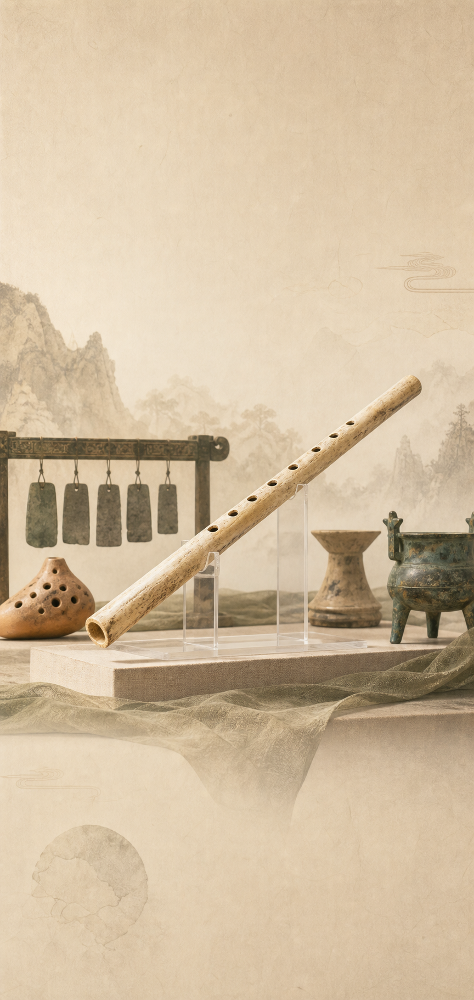

人类开始更稳定地定居、种植、制陶，并发展仪式与审美活动。
01 · 考古发现
一支骨笛，打开史前音乐之门
贾湖骨笛出土于河南舞阳贾湖遗址，距今约八千多年，是中国早期音乐文明的重要实物证据。
多支骨笛用鸟类尺骨制成，保留清晰的钻孔与修整痕迹。
孔距与音高关系显示，先民已能有意识地控制声音。

01 · 考古发现
贾湖骨笛出土于河南舞阳贾湖遗址，距今约八千多年，是中国早期音乐文明的重要实物证据。
人类开始更稳定地定居、种植、制陶，并发展仪式与审美活动。
多支骨笛用鸟类尺骨制成，保留清晰的钻孔与修整痕迹。
孔距与音高关系显示，先民已能有意识地控制声音。
02 · 乐器图谱
以鸟骨制成，钻孔调音，体现早期音高控制能力。
陶土烧制，中空发声，是中国吹奏乐器的重要源流之一。
敲击石片产生清越音色，后来进入礼乐制度。
节奏帮助集体活动同步，也可能服务祭祀、舞蹈与劳动。
03 · 科学解释
空气柱：吹气让管内空气振动，形成声音。
开孔位置：按住或放开不同孔，会改变有效空气柱长度。
音高变化：空气柱越短，声音通常越高；越长，声音通常越低。
如果把骨笛做得更长，音高可能会发生什么变化？
04 · 课堂互动
选择你认为正确的答案，看看是否听懂了远古乐器的秘密。
贾湖骨笛最能说明远古先民已经具备哪种能力？
让学生理解：考古文物不只是“古老物品”，也是观察科技、艺术与生活方式的证据。